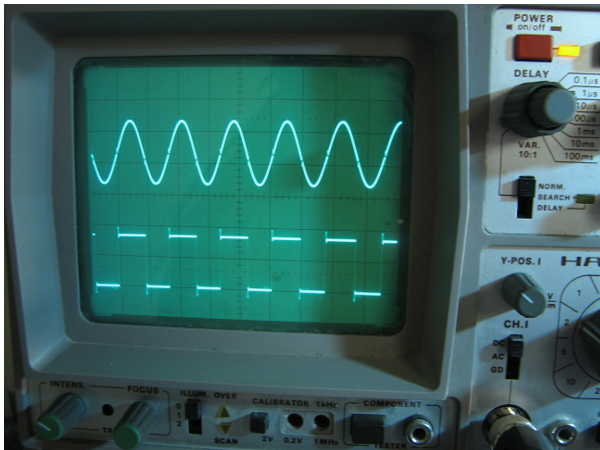

<h3>Things and ideas we are/have been working on:</h3>
<ul>
<li>We're organising monthly <a href="http://www.meetup.com/vilnius-hack-and-tell/">Hack and Tell events in Vilnius</a>, Lithuania</li>
<li>Restoring and upgrading a huge Soviet <a href="http://blog.technariumas.lt/post/104323963331/we-decided-to-reward-ourselves-with-a-large">vertical milling machine</a>.</li>
<li><a href="http://blog.technariumas.lt/post/105426306766/tv-b-gone">Electronics workshops</a> (our <a href="https://github.com/Miceuz/TV-B-Gone/tree/master/tvbgone-workshop"> SMD version</a> of <a href="http://cornfieldelectronics.com/tvbgone/tvbg.home.php">TV-B-Gone</a>)</li>	
<li><a href="http://ksuarduino.tumblr.com">Teaching an Arduino course at Kazimieras Simonavičius University</a></li>
<li>Measuring <a href="http://blog.technariumas.lt/post/104072717886/opit-is-about-to-give-a-talk-on-her-recent-work-on">kinematic properties of galaxies</a></li>
<li><a href="https://www.facebook.com/pages/Daikt%C5%B3-meistras/506872139422512?sk=photos_stream">Multiple custom home improvement projects (metalwork, furniture restoration, carpentry)</a></li>	
<li><a href="http://wemakethings.net/2014/10/14/hp_kbd/">Reverse engineering a custom HP instrument keyboard protocol</a></li>
<li><a href="http://blog.technariumas.lt/post/103712559081/the-swings-with-wireless-dmx-controlled-leds-we">Custom swings with wireless dmx-controlled LEDs</a> for a theatre</li>
 
<li><a href="http://wemakethings.net/2013/12/31/eq1_drive/">A tracking system for an amateur telescope</a></li>
<li><a href="http://blog.technariumas.lt/tagged/lightpainting">DIY lightpainting kit</a></li>
<li><a href="http://wemakethings.net/2014/04/24/k-thermocouple-lib/">A K-type thermocouple library for embedded applications</a></li>
<li><a href="http://blog.technariumas.lt/post/97552310636/hacking-a-smpsu">Hacking a cheap power supply to function as a car battery charger</a></li>
<li><a href="http://wemakethings.net/2014/06/23/pieva">Light installation for the Burning Man</a></li>
<li><a href="https://vimeo.com/78537844">Compressed air cannon for a theater</a></li>
<li><a href="http://wemakethings.net/2014/08/08/enameling/">Enameling and lost wax casting</a></li>
<li><a href="http://blog.technariumas.lt/tagged/electricity">Building a micro hydro-power plant </a>next to a water wheel we made</li>
<li><a href="http://vimeo.com/78911271">The water wheel</a></li>
<li><a href="http://blog.technariumas.lt/post/88881012111/3d-printed-parts-for-the-silicone-meadow">3D printing</a>
<li>Swing bike</li>
<li><a href="http://blog.technariumas.lt/tagged/ceramics">Ceramics</a></li>
<li>Open-source mixture of Gaussians outlier rejection implementation in Python</li>
<li>Developing a medium-scale waste plastic pyrolysis apparatus</li>
<li>Professional steady cam head setup</li>
<li><a href="http://wemakethings.net/chirp/">Open-source plant watering alarm and moisture sensor</a></li>
<li><a href="https://vimeo.com/80450306">Gesture-controlled fire cannon</a></li>
<li>Small boats restoration</li>
<li><a href="http://wemakethings.net/2012/07/27/coffee_roaster_complete">Drum coffee roaster</a></li>
<li><a href="https://img1.etsystatic.com/033/0/8620093/il_570xN.525007537_drqn.jpg">Soap making</a></li>
<li>Open source thermocouple conditioning module with mod-bus interface</li>
<li>Open source pH meter</li>
<li><a href="http://wemakethings.net/2013/10/27/triac-bloc">Open source solid-state kW relay with I2C interface</a></li>
<li><a href="http://wemakethings.net/2013/05/18/dmx-dimmer-case/">An open-source 12-channel DMX dimmer, complete with case</a></li>
<li><a href="http://wemakethings.net/2013/10/12/miner_in_a_fridge_and_radeon_5850_disassembly">4-GPU Litecoin mining rig</a></li>
<li><a href="http://wemakethings.net/2013/10/03/summer-sauna">19th century smoke sauna rebuild</a></li>
<li><a href="http://wemakethings.net/archive.html">Many others!</a></li>
</ul>

<br />

<p>
Contact us: <a href="mailto:crew@technariumas.lt">crew(a)technariumas.lt</a><br />
</p>
